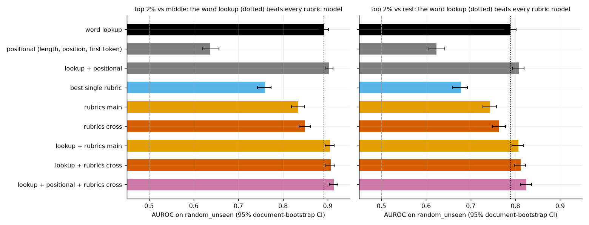
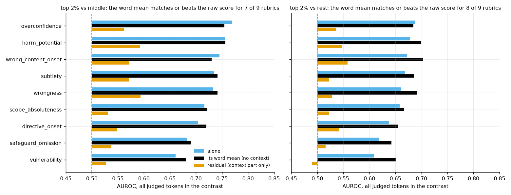
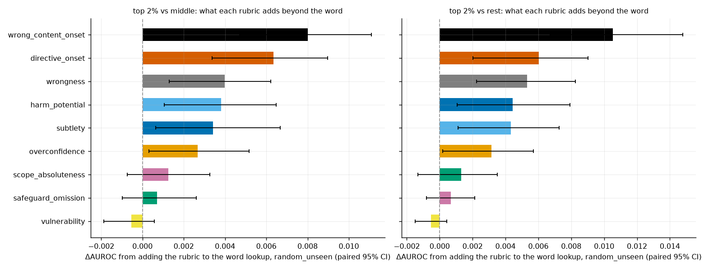
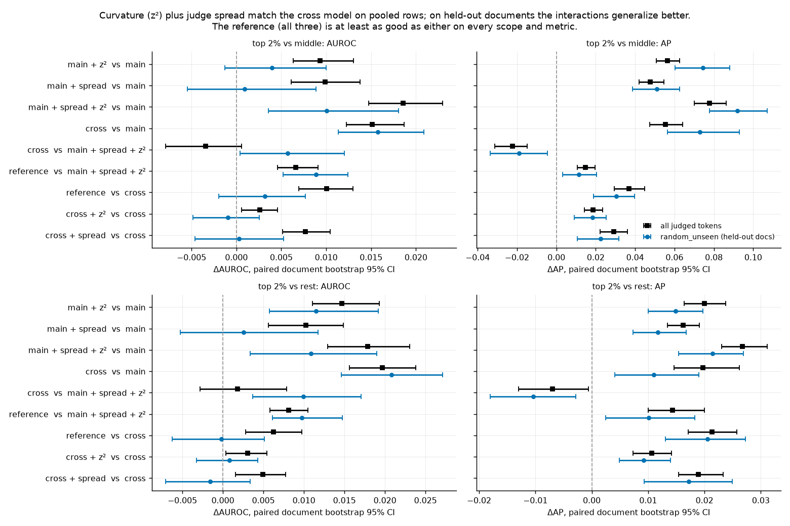
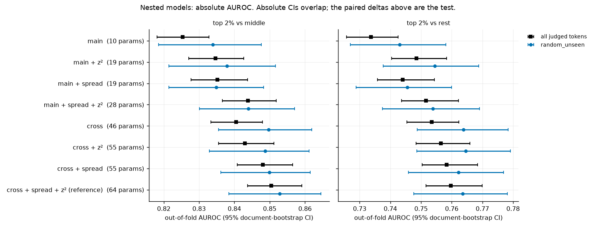
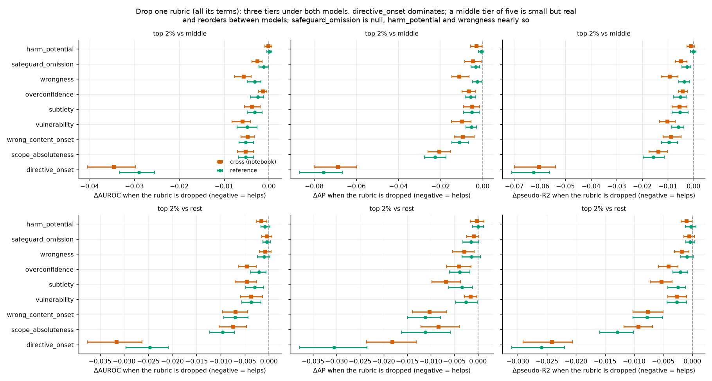
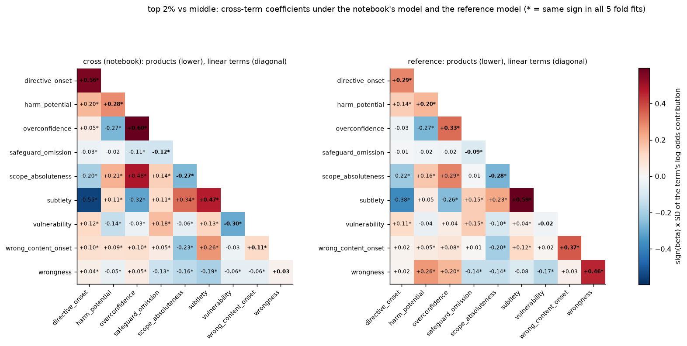
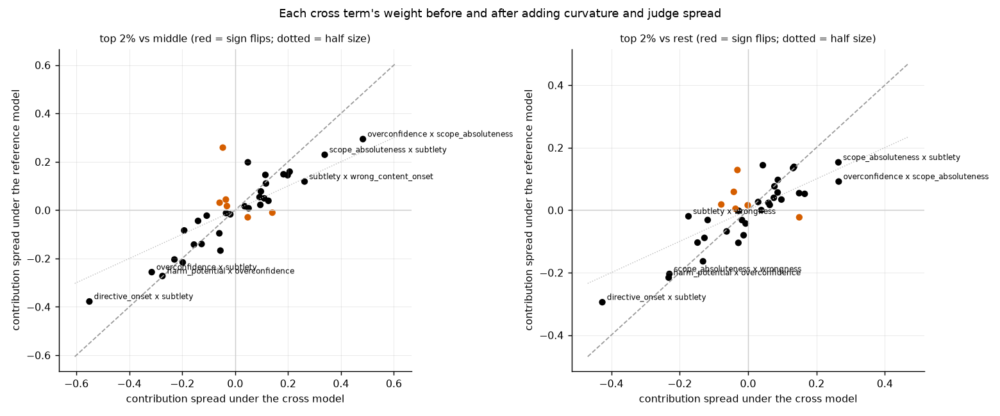
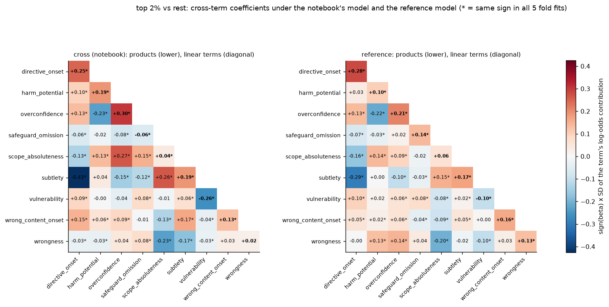

What drives the IF top 2%: baselines, the reference model, and what the cross terms mean
Additions to analyse_rubric_eval.ipynb, run 2026-11-24. Career dataset, OLMo 3 7B token-level EK-FAC scores, the 1,589 judged documents (105,090 tokens), nine 0-9 judge rubrics. Headline numbers are on random_unseen, the 1,000 documents never used in rubric development; pooled numbers sit beside them. Every difference carries a paired document-bootstrap 95% CI. Each item was red-teamed by an independent subagent after it ran; their reports are in the appendix unedited.
Goal
Find what drives the influence-function (IF) top-2% label at the token level, and whether the judge rubrics carry signal beyond it. Three questions, in dependency order: what is the baseline that "signal" must beat; which model should the interpretive sections use; and, under that model, which rubrics and which interactions actually matter.
Summary
- Baselines. A per-word lookup of the top-2% rate, with no judge at all, beats the notebook's best model on held-out documents (AUROC 0.892 vs 0.850 on middle, 0.789 vs 0.764 on rest). The rubrics add a real but small increment on top of it. For every rubric, its own context-free word mean is about as good as the raw score.
- Reference model. Per-rubric curvature (z²) and judge spread each add as much as the cross terms on pooled rows, and the three together beat any subset. On held-out documents the interactions generalize better than curvature plus spread. Use cross + spread + z² for interpretation; it is at least as good as every alternative on every scope and metric.
- Interpretation under the reference model. directive_onset dominates; five rubrics form a small middle tier whose order is model-dependent; safeguard_omission contributes nothing unique, harm_potential and wrongness nearly nothing. Most rubrics' interaction groups collapse to near zero once curvature and spread are present; directive_onset × subtlety is the one product that survives everywhere.
- Red-teams. No computational bug was found in any item. Each independent recomputation matched to three or four decimals. Four reporting issues were raised and fixed (an overstated figure title, a residual that should use the leave-one-out mean, a delta figure that hid the held-out scope, and cosmetic heatmap problems).
1. What does a rubric have to beat before it counts as signal?
A lookup table of P(top 2% | word), estimated out of fold on the training documents, outperforms every rubric model on the held-out documents. Positional features alone (reply length, position in reply, first-token flag) reach about 0.63. Adding the rubrics to the lookup helps, by about +0.014 AUROC on middle and +0.022 on rest, with CIs clear of zero, and finds 70 to 54 more true top-2% tokens at the R-precision cut. The IF top-2% label is lexically concentrated: the red-team found 200 words hold 69% of the positives.

| model | AUROC | AP | tokens found (of 1005) | AUROC | AP | tokens found (of 1005) | AUROC all, middle | AUROC all, rest |
|---|---|---|---|---|---|---|---|---|
| word lookup | 0.892 | 0.546 | 507 | 0.789 | 0.104 | 168 | 0.885 | 0.777 |
| positional (length, position, first token) | 0.637 | 0.205 | 204 | 0.624 | 0.039 | 97 | 0.638 | 0.616 |
| lookup + positional | 0.903 | 0.608 | 542 | 0.807 | 0.175 | 241 | 0.895 | 0.793 |
| best single rubric (overconfidence) | 0.760 | 0.271 | 336 | 0.678 | 0.038 | 71 | 0.769 | 0.688 |
| rubrics main | 0.834 | 0.411 | 406 | 0.743 | 0.064 | 130 | 0.825 | 0.734 |
| rubrics cross | 0.850 | 0.484 | 469 | 0.764 | 0.075 | 146 | 0.840 | 0.753 |
| lookup + rubrics main | 0.905 | 0.613 | 583 | 0.807 | 0.112 | 177 | 0.899 | 0.794 |
| lookup + rubrics cross | 0.906 | 0.629 | 577 | 0.811 | 0.126 | 222 | 0.901 | 0.799 |
| lookup + positional + rubrics cross | 0.914 | 0.653 | 607 | 0.824 | 0.163 | 242 | 0.909 | 0.811 |
| contrast | comparison | ΔAUROC [95% CI] | ΔAP [95% CI] | Δtokens found [95% CI] |
|---|---|---|---|---|
| middle | rubrics cross minus word lookup | -0.042 [-0.054, -0.032] | -0.062 [-0.095, -0.031] | -38 [-72, -12] |
| middle | lookup + rubrics cross minus word lookup | +0.014 [+0.010, +0.019] | +0.083 [+0.064, +0.101] | +70 [+50, +90] |
| middle | lookup + positional + rubrics cross minus lookup + positional | +0.011 [+0.007, +0.015] | +0.045 [+0.032, +0.058] | +65 [+41, +82] |
| rest | rubrics cross minus word lookup | -0.025 [-0.038, -0.010] | -0.029 [-0.045, -0.015] | -22 [-49, +2] |
| rest | lookup + rubrics cross minus word lookup | +0.022 [+0.016, +0.029] | +0.023 [+0.011, +0.037] | +54 [+32, +76] |
| rest | lookup + positional + rubrics cross minus lookup + positional | +0.017 [+0.012, +0.022] | -0.012 [-0.024, -0.001] | +1 [-13, +18] |
Per rubric: how much is the word, how much is the context?
Replacing each rubric's score with the leave-one-out mean score of the same word, which uses no labels and no context, matches or beats the raw score for 7 of 9 rubrics on middle and 8 of 9 on rest. The context-dependent residual carries weak signal (AUROC 0.53 to 0.59 on middle, 0.49 to 0.56 on rest). Added individually to the lookup, wrong_content_onset and directive_onset contribute most; scope_absoluteness, safeguard_omission and vulnerability add nothing distinguishable from zero.


| rubric | alone | its word mean | residual | ΔAUROC over lookup (random_unseen) | alone | its word mean | residual | ΔAUROC over lookup (random_unseen) |
|---|---|---|---|---|---|---|---|---|
| directive_onset | 0.704 | 0.720 | 0.549 | +0.006 [+0.003, +0.009] | 0.638 | 0.654 | 0.542 | +0.006 [+0.002, +0.009] |
| harm_potential | 0.756 | 0.757 | 0.592 | +0.003 [+0.001, +0.007] | 0.678 | 0.699 | 0.546 | +0.004 [+0.001, +0.008] |
| overconfidence | 0.769 | 0.755 | 0.562 | +0.003 [+0.000, +0.005] | 0.688 | 0.685 | 0.536 | +0.003 [+0.000, +0.006] |
| safeguard_omission | 0.683 | 0.691 | 0.538 | +0.001 [-0.001, +0.003] | 0.618 | 0.642 | 0.516 | +0.001 [-0.001, +0.002] |
| scope_absoluteness | 0.717 | 0.722 | 0.532 | +0.001 [-0.001, +0.003] | 0.658 | 0.667 | 0.522 | +0.001 [-0.001, +0.003] |
| subtlety | 0.745 | 0.730 | 0.572 | +0.004 [+0.001, +0.006] | 0.669 | 0.685 | 0.523 | +0.004 [+0.001, +0.007] |
| vulnerability | 0.661 | 0.680 | 0.528 | -0.001 [-0.002, +0.001] | 0.609 | 0.651 | 0.490 | -0.001 [-0.001, +0.000] |
| wrong_content_onset | 0.733 | 0.742 | 0.594 | +0.008 [+0.005, +0.011] | 0.672 | 0.703 | 0.558 | +0.011 [+0.007, +0.015] |
| wrongness | 0.734 | 0.742 | 0.571 | +0.004 [+0.001, +0.006] | 0.661 | 0.691 | 0.528 | +0.005 [+0.002, +0.008] |
Red-team 1 verdict: claims stand; the lookup result is robust to the smoothing constant from 1 to 200; the only corrections were the "8 of 9" wording and the residual definition, both fixed before this report. Report.
2. Which model should the interpretive sections use?
Adding each rubric's square and its judge spread to the main model (28 parameters) matches the cross model (46) on pooled AUROC and beats it on AP. The reference model with all three term types (64) beats both on every pooled metric. On held-out documents the picture shifts: the cross terms' AUROC gain generalizes and the curvature-plus-spread gain partly does not, so cross beats main + spread + z² there by about +0.006 to +0.010, while the reference stays level with cross on AUROC and ahead on AP. The reference model is never worse than either alternative, so it is the model to interpret. What the cross coefficients mean is the subject of item 3.

| model | params | AUROC all | AP all | AUROC ru | AP ru | AUROC all | AP all | AUROC ru | AP ru |
|---|---|---|---|---|---|---|---|---|---|
| main | 10 | 0.825 | 0.513 | 0.834 | 0.411 | 0.734 | 0.106 | 0.743 | 0.064 |
| main + z² | 19 | 0.835 | 0.569 | 0.838 | 0.486 | 0.748 | 0.126 | 0.755 | 0.079 |
| main + spread | 19 | 0.835 | 0.560 | 0.835 | 0.462 | 0.744 | 0.122 | 0.746 | 0.076 |
| main + spread + z² | 28 | 0.844 | 0.591 | 0.844 | 0.503 | 0.752 | 0.132 | 0.754 | 0.085 |
| cross | 46 | 0.840 | 0.568 | 0.850 | 0.484 | 0.753 | 0.125 | 0.764 | 0.075 |
| cross + z² | 55 | 0.843 | 0.587 | 0.849 | 0.502 | 0.756 | 0.136 | 0.765 | 0.084 |
| cross + spread | 55 | 0.848 | 0.597 | 0.850 | 0.507 | 0.758 | 0.144 | 0.762 | 0.092 |
| cross + spread + z² (reference) | 64 | 0.850 | 0.605 | 0.853 | 0.514 | 0.760 | 0.147 | 0.764 | 0.095 |
| contrast | comparison | ΔAUROC all | ΔAP all | ΔAUROC random_unseen | ΔAP random_unseen |
|---|---|---|---|---|---|
| middle | cross minus main | +0.015 [+0.012, +0.019] | +0.055 [+0.047, +0.064] | +0.016 [+0.011, +0.021] | +0.073 [+0.057, +0.093] |
| middle | main + spread + z² minus main | +0.019 [+0.015, +0.023] | +0.078 [+0.070, +0.086] | +0.010 [+0.004, +0.018] | +0.092 [+0.078, +0.107] |
| middle | cross minus main + spread + z² | -0.003 [-0.008, +0.001] | -0.022 [-0.031, -0.015] | +0.006 [+0.000, +0.012] | -0.019 [-0.033, -0.004] |
| middle | cross + spread + z² minus main + spread + z² | +0.007 [+0.005, +0.009] | +0.015 [+0.011, +0.020] | +0.009 [+0.005, +0.012] | +0.011 [+0.003, +0.020] |
| middle | cross + spread + z² minus cross | +0.010 [+0.007, +0.013] | +0.037 [+0.029, +0.045] | +0.003 [-0.002, +0.008] | +0.030 [+0.019, +0.040] |
| rest | cross minus main | +0.020 [+0.016, +0.024] | +0.020 [+0.015, +0.026] | +0.021 [+0.015, +0.027] | +0.011 [+0.004, +0.019] |
| rest | main + spread + z² minus main | +0.018 [+0.013, +0.023] | +0.027 [+0.023, +0.031] | +0.011 [+0.003, +0.019] | +0.021 [+0.015, +0.027] |
| rest | cross minus main + spread + z² | +0.002 [-0.003, +0.008] | -0.007 [-0.013, -0.001] | +0.010 [+0.004, +0.017] | -0.010 [-0.018, -0.003] |
| rest | cross + spread + z² minus main + spread + z² | +0.008 [+0.006, +0.010] | +0.014 [+0.010, +0.020] | +0.010 [+0.006, +0.015] | +0.010 [+0.002, +0.018] |
| rest | cross + spread + z² minus cross | +0.006 [+0.003, +0.010] | +0.021 [+0.017, +0.026] | -0.000 [-0.006, +0.005] | +0.021 [+0.013, +0.027] |
Absolute AUROC per model with CIs

Red-team 2 verdict: no computational bugs; the fit converges in 7 to 8 Newton steps with a benign Hessian; an independent L-BFGS refit reproduces the AUROCs to 3e-5. It flagged that the original figure showed only pooled rows while the held-out scope reverses the cross-vs-curvature ordering, which is now shown and stated above. It also showed the overlap is symmetric: squares are as predictable from products as products from squares, so "the products are proxies" is no more true than the reverse. Report.
3. Under the reference model, which rubrics and interactions matter?
Dropping a rubric with all its terms gives three tiers under both models. directive_onset costs about 0.03 AUROC on its own. scope_absoluteness, wrong_content_onset, subtlety, overconfidence and vulnerability each cost 0.002 to 0.01 and their order changes between models. safeguard_omission costs nothing; harm_potential and wrongness cost 0.001 to 0.003, distinguishable from zero on middle but not materially so. Interaction groups shrink sharply once curvature and spread are in the model: on middle, overconfidence's products go from -0.0047 to -0.0006 pseudo-R², scope_absoluteness's from -0.0108 to -0.0031, subtlety's from -0.0086 to -0.0022, and directive_onset's halve. Of the 36 products, 30 keep their sign with a median weight ratio of 0.71; the number whose drop-one CI excludes zero is 5 under cross and 7 under the reference on middle, 8 and 6 on rest. directive_onset × subtlety is the only product that is significant under both models on both contrasts.

| dropped rubric | cross, middle | reference, middle | cross, rest | reference, rest |
|---|---|---|---|---|
| directive_onset | -0.035 [-0.040, -0.030] | -0.029 [-0.033, -0.025] | -0.032 [-0.038, -0.026] | -0.025 [-0.030, -0.021] |
| scope_absoluteness | -0.005 [-0.007, -0.003] | -0.005 [-0.007, -0.003] | -0.007 [-0.010, -0.005] | -0.010 [-0.012, -0.007] |
| wrong_content_onset | -0.005 [-0.006, -0.003] | -0.005 [-0.007, -0.003] | -0.007 [-0.010, -0.004] | -0.007 [-0.009, -0.004] |
| subtlety | -0.006 [-0.008, -0.004] | -0.005 [-0.007, -0.003] | -0.005 [-0.007, -0.003] | -0.003 [-0.005, -0.001] |
| overconfidence | -0.006 [-0.008, -0.004] | -0.003 [-0.005, -0.002] | -0.005 [-0.006, -0.003] | -0.002 [-0.004, -0.001] |
| vulnerability | -0.004 [-0.005, -0.002] | -0.003 [-0.005, -0.001] | -0.004 [-0.006, -0.001] | -0.004 [-0.006, -0.002] |
| wrongness | -0.001 [-0.002, -0.000] | -0.002 [-0.004, -0.001] | -0.001 [-0.002, +0.000] | -0.001 [-0.002, +0.000] |
| harm_potential | -0.003 [-0.004, -0.001] | -0.001 [-0.002, -0.000] | -0.002 [-0.003, -0.000] | -0.001 [-0.002, +0.000] |
| safeguard_omission | -0.000 [-0.001, +0.001] | +0.000 [-0.000, +0.001] | -0.000 [-0.001, +0.001] | -0.000 [-0.001, +0.000] |
| rubric's 8 products dropped | cross, middle | reference, middle | cross, rest | reference, rest |
|---|---|---|---|---|
| directive_onset | -0.0191 | -0.0098 | -0.0134 | -0.0098 |
| scope_absoluteness | -0.0108 | -0.0031 | -0.0049 | -0.0020 |
| subtlety | -0.0086 | -0.0022 | -0.0053 | -0.0013 |
| harm_potential | -0.0012 | -0.0010 | -0.0001 | +0.0003 |
| overconfidence | -0.0047 | -0.0006 | -0.0024 | -0.0002 |
| wrongness | -0.0033 | -0.0003 | -0.0013 | +0.0000 |
| wrong_content_onset | -0.0018 | -0.0001 | -0.0018 | +0.0001 |
| vulnerability | -0.0003 | -0.0000 | +0.0000 | -0.0003 |
| safeguard_omission | -0.0012 | +0.0000 | -0.0005 | -0.0001 |


| product | weight, cross | weight, reference | ratio | drop-one CI excludes 0, cross | same, reference | weight, cross (rest) | weight, reference (rest) | ratio (rest) |
|---|---|---|---|---|---|---|---|---|
| directive_onset x subtlety | -0.55 | -0.38 | 0.69 | yes | yes | -0.43 | -0.29 | 0.69 |
| overconfidence x scope_absoluteness | +0.48 | +0.29 | 0.61 | yes | no | +0.27 | +0.09 | 0.35 |
| scope_absoluteness x subtlety | +0.34 | +0.23 | 0.68 | no | no | +0.26 | +0.15 | 0.58 |
| overconfidence x subtlety | -0.32 | -0.26 | 0.81 | no | no | -0.15 | -0.10 | 0.70 |
| harm_potential x overconfidence | -0.27 | -0.27 | 0.99 | no | no | -0.23 | -0.22 | 0.93 |
| subtlety x wrong_content_onset | +0.26 | +0.12 | 0.45 | yes | no | +0.17 | +0.05 | 0.32 |
| scope_absoluteness x wrong_content_onset | -0.23 | -0.20 | 0.89 | no | no | -0.13 | -0.09 | 0.70 |
| harm_potential x scope_absoluteness | +0.21 | +0.16 | 0.77 | no | no | +0.13 | +0.14 | 1.03 |
Heatmap for the rest contrast

Red-team 3 verdict: no computational bugs; its own refit reproduced the directive_onset drop-one delta (-0.0290) and the directive_onset × subtlety weights (-0.551 / -0.378) exactly, and the cross-model drop-one values match the notebook's saved cell 23 to three decimals. It corrected my wording: the middle tier reorders between models, and wrongness and harm_potential are small rather than null. Both are reflected above. Report.
What to do next: decisions that are yours
- Item 4, direction. Fit bottom-X% vs middle and top vs bottom with the reference model. Choices: X for the bottom band (2% to mirror the top, or wider since the bottom tail is less lexical); whether the signed predictor regresses on the percentile or on the signed raw score; and whether to keep the two-sided classification as a check. The mass-captured analysis showed the current top-2% classifier selects protective tokens, which only a signed target can learn.
- Replace
scorewith the digit distribution in the notebook's fits. The reference model needs the spread column from p0..p9, which the CSVs already carry. The cheapest version is the 9 scores + 9 spreads + 9 squares used here; the fuller version is all 81 digit probabilities, which performed the same in the earlier check. - Report the lookup and positional rows in the cell 19 table and quote the residual AUROC or the increment over the lookup as a rubric's screening number.
- Not done here, on purpose. AME plots under the reference model (secondary, no new information expected); the word-mean versus raw analysis stratified by frequency (item 5 of the plan); the IF-mass-captured metric on held-out documents (item 6); the hand-labelled sample.
Appendix
A1. Reproduction check
Before any new number, the notebook's own saved outputs were recomputed from scratch with the shared module, same seed, same document folds, same standardization.
| quantity | notebook's saved output | recomputed with common.py | match |
|---|---|---|---|
| group table (docs / tokens / top-2%) | 400/26766/1665, 100/6534/411, 89/6434/248, 1000/65356/1005 | identical | yes |
| middle: main AUROC / AP / R-prec | 0.825 / 0.513 / 0.487 | 0.8253 / 0.5128 / 0.4869 | yes |
| middle: cross AUROC / AP / R-prec | 0.840 / 0.568 / 0.525 | 0.8404 / 0.5682 / 0.5251 | yes |
| rest: main AUROC / AP / R-prec | 0.734 / 0.106 / 0.167 | 0.7337 / 0.1056 / 0.1670 | yes |
| rest: cross AUROC / AP / R-prec | 0.753 / 0.125 / 0.199 | 0.7534 / 0.1253 / 0.1995 | yes |
| middle: AUROC CI main / cross (cell 21) | [0.818, 0.833] / [0.833, 0.848] | [0.818, 0.833] / [0.833, 0.848] | yes |
| middle: drop directive_onset, cross: ΔAUROC / ΔAP (cell 23) | -0.035 [-0.040, -0.030] / -0.069 [-0.080, -0.060] | -0.035 [-0.040, -0.030] / -0.069 [-0.080, -0.060] | yes |
A2. Method notes
- Data:
scped_IFS/token_scores_olmo_career.npzjoined to the ninescped_IFS/rubric_eval/*/attributions.csv, exactly as the notebook's cells 2 to 4. Judge spread per token is the SD of the renormalized digit distribution p0..p9. Word key: stripped, lowercased token text. - Folds: five, by document, seed 0, as the notebook. Standardization fitted on training folds; products and squares not re-standardized (the notebook's convention; red-team 2 showed re-standardizing changes nothing at four decimals).
- Lookup: smoothed rate (sum + 5·prior)/(count + 5) per word from training-fold tokens, prior = training base rate, unseen words get the prior. Fed to the logistic as its logit. Stacking caveat (red-team 0): training rows' lookup values were estimated on folds that include the test fold's labels; a fully nested lookup moves AUROC by about 0.0005 in the conservative direction.
- CIs: 200 document resamples; paired deltas evaluate both models on the same resample. Error bars are never clipped.
- Fold-sign stars on the coefficient heatmaps come from fits on the full-data standardization and overlap 4/5 with the full fit; they are a weak stability check, interpretation only.
A3. Files
common.py,plotting.py: shared code.item0_reproduce.py,item1_baselines.py,item2_reference_model.py,item3_interpret.py,build_report.py.- CSVs:
item1_models.csv,item1_deltas.csv,item1_rubric_screen.csv,item2_models.csv,item2_deltas.csv,item3_drop_rubric.csv,item3_drop_pair.csv,item3_coefficients.csv,item3_pairs_cross_vs_reference.csv,item0_reproduce.json. - Figures in
figures/. Red-team reports inredteam_reports/. Run logsitem*_run.log. - Nothing was installed; the notebook was not modified; only the EMinf venv interpreter was used; no network access.
A4. Red-team 0: shared code and reproduction
# Red-team 0: common.py and the reproduction check (subagent report, verbatim) BUGS FOUND (none high; two low-severity caveats, no effect on reported numbers) 1. common.py:184-195 (`oof_predict`, `extra` with `rows`), low. `extra` is indexed as `np.asarray(extra)[rows]`, so it must have full length len(fd["sub"]) even when `rows` is a subset; the docstring says "(n_rows, k)", which is ambiguous. Passing a len(rows)-length array raises IndexError in practice (verified), so it fails loudly rather than misaligning, unless rows happen to be the leading indices. Fix the docstring. Scores/labels/folds themselves are correctly co-indexed by `rows` (verified: rows-subset prediction equals a manual masked fit exactly). 2. common.py:215-227 + item1 usage (`oof_lookup` fed as `extra`), low. Classic stacking caveat: for outer fold k, training rows' lookup feature was estimated on folds != own, which includes fold k's labels, so the coefficient on the lookup is fit on features that saw test labels. I re-ran with a properly nested lookup (inner OOF among the 4 training folds): "lookup only" AUROC 0.8847 vs nested 0.8849; "lookup + rubrics main" 0.8994 vs 0.8999 (random_unseen 0.9051 vs 0.9055). Effect is ~0.0005 and in the conservative direction; worth a one-line note, not a fix. Everything else checked clean: `oof_lookup` matches a brute-force rate on 200 test rows (train-only stats, train prior for unseen words); `loo_word_mean` matches brute force on 300 rows and uses no labels; standardization is fitted on train folds only and `np.where` version is numerically identical to the notebook's in-place version (incl. sd==0 column); `build_design` column order matches `term_names` for all term sets and for explicit `pairs` (counts and spot-checked columns); spread uses p0..p9 renormalised (row sums are 0.98-1.0; all `sd_` finite) with sqrt(E[x^2]-E[x]^2); `paired_boot` uses one resample per iteration for all models (paired), quantiles per column; `abs_boot` fine. `keep_default_na=False` differs from the notebook (2 tokens "NA" are NaN there) but the join count is identical (105090). Minor: 306 whitespace-only tokens collapse to word "" in the lookup. NUMBERS (independent code, no common import except (iii)): (i) top2 vs middle: n = 23939, base rate 0.1391 (3329 positives). Confirmed. (ii) AUROC overconfidence = 0.7695. Confirmed (0.769). (iii) harm_potential row 0 (ex 11, pos 136, "."): hand SD = 0.316227, common sd_harm_potential = 0.316227. Match. Also `score` == EV of normalised P to 1e-15. Folds: both contrasts 1589 docs, each in exactly one fold; docs/fold 318/318/318/318/317; tokens/fold (middle) 5070/4796/4579/4783/4711; positives/fold 684/637/660/645/703; no doc in both train and test of any fold; doc_rows cover every row once, each single-doc. VERDICT: common.py faithfully reproduces the notebook (data, folds, fits, bootstraps) and is safe to build on; only clarify the `extra` length convention and optionally footnote the negligible stacking caveat. Action taken: docstring fixed and the stacking caveat recorded in common.oof_predict's docstring.
A5. Red-team 1: baselines
# Red-team 1: item1_baselines.py (subagent report, verbatim) BUGS FOUND 1. item1_baselines.py:138 (fig-2 title) and claim (C) wording — "word mean matches or beats the rubric" / "8 of 9". Actual: middle 7/9 (overconfidence 0.7545 < 0.7695, subtlety 0.7302 < 0.7454), rest 8/9 (overconfidence). Residual range "0.51–0.59" is middle only; rest spans 0.4875–0.555 (vulnerability below chance). No CI is computed for word-mean vs raw (harm_potential middle differs by 0.0009). Severity: medium (overstatement), code itself fine. 2. item1_baselines.py:86 — residual uses the plain word mean, so residual = (1−1/n)(s − LOO mean): exactly 0 for singleton words (4.4% middle / 1.7% rest of rows) and shrunk by word count. Switching to LOO moves residual AUROC by up to ±0.03 (directive_onset 0.573→0.549, subtlety 0.540→0.572) but the range stays 0.53–0.59 (middle). Severity: low. 3. item1_baselines.py:39 — best single rubric chosen on all rows incl. random_unseen. Choosing on non-ru rows picks the same (overconfidence); effect zero. Severity: low/minor optimism. 4. Note (not a bug): for the middle contrast the LOO word mean is taken over label-selected tokens (top ∪ middle). Using the full-corpus word mean gives higher AUROC (8/9 on middle), so the claim is not inflated by this. CHECKS - Lookup leakage: flipping every test-fold label leaves test-fold lookup values unchanged (max diff 0.0, all 5 folds); no document spans folds; my own lookup implementation on the script's folds matches C.oof_lookup exactly. Fully nested (non-stacked) lookup+cross gives 0.9070/0.8121 vs script 0.9064/0.8115 — stacking caveat is conservative. - subset_doc_rows: 1000 groups, index 0..n−1 covered exactly, each group one document. paired_boot references consistent; raw-logit lookup vs per-fold-refit "lookup only" AUROC differ ≤0.0003. - random_unseen definition identical to notebook cell 4. - Alpha sensitivity, lookup AUROC ru (middle / rest): α=0 0.868/0.749; α=1 0.890/0.772; α=5 0.892/0.789; α=50 0.880/0.797; α=200 0.872/0.792. Rubrics cross = 0.850/0.764. Δ(lookup+cross − lookup): middle +0.018/+0.014/+0.012, rest +0.031/+0.022/+0.017 for α=1/5/50. Ranking of (A),(B) unchanged for α∈[1,200]; only the unsmoothed α=0 lookup loses to the rubrics on rest. - Independent recomputation (own code, own folds; seeds 1–4, 5/10/20-fold): middle ru lookup AUROC 0.8940–0.8975 vs 0.8920 — within 0.01. - Artifact probe: top-2% is strongly lexical. In-sample lookup AUROC 0.947 (middle)/0.884 (rest); 3329 positives span 996 words, top 200 words hold 69%; "just/without/only/immediately/solely/automatically/tell/ignore" are 93–100% positive in the middle contrast; 60% of middle positives have a word with in-sample rate >0.5. No path for score/pctile into the lookup (key = token_text only). Finding, not bug: the IF signal is largely absolutist/directive vocabulary, which is why a unigram beats the judge. - Figures: item1_models.png and item1_increment.png match CSVs; error bars present, unclipped (xlims contain all CIs). item1_rubric_screen.png: title overstated (bug 1), no CIs; values match CSV. - (D): 0.637 / 0.624 matches "~0.64/~0.62". VERDICT (A) stands — robust to α≥1; add the caveat that the lookup wins because top-2% is lexically concentrated. (B) stands. (C) stands with caveat — 7/9 (middle), 8/9 (rest); residual range is contrast-specific; residual should use LOO mean; no CIs. (D) stands. Action taken: residual switched to the LOO word mean; figure title now states the actual count per contrast; item 1 rerun.
A6. Red-team 2: reference model
# Red-team 2: item2_reference_model.py (subagent report, verbatim) BUGS FOUND 1. item2_reference_model.py:75 (and suptitle line 89): the delta figure plots only scope=="all" and the headline is stated for "all rows". On the random_unseen subset (the only docs not used in rubric development; 14,213/23,939 middle rows but only 1,005/3,329 positives) the AUROC ordering reverses: cross − (main+spread+z²) = +0.0057 [+0.0004, +0.0120] middle, +0.0099 [+0.0037, +0.0170] rest; reference − cross = +0.003 [−0.002, +0.008] middle, −0.0002 [−0.006, +0.005] rest. On unseen docs, interactions beat curvature+spread and the latter add nothing on top of cross (AUROC; AP still favours spread+z²). Severity: medium (reporting, not computation); "all" is weighted toward seen docs holding 70% of positives. 2. item2_reference_model.py:106: legend(loc="lower right") in item2_nested_abs.png sits on the reference-model row's markers/bars in the left panel. Severity: low, cosmetic. No computational bugs found. CHECKS - z², spread, products are built from training-fold-standardized Z/SD (common.py:204-209); test rows use train mu/sigma. Products/squares not re-standardized; re-standardizing every column on train stats gives identical OOF AUROC/AP to 4 dp for all three models (ridge 1e-4 vs n≈19k per train fold is negligible). - Convergence (instrumented copy, middle contrast, every fold): reference 7-8 Newton iterations, final step ≤ 4e-8, max|grad| < 1e-12, step norms monotone, max|eta| ≈ 7 (clip never active), max|beta| ≈ 1.9; my beta equals common.fit_logit exactly. cond(H) at convergence: reference 5.3e3-6.7e3, cross ~3e3, main+spread+z² ~1.2e3 — benign. corr(z², spread) per rubric −0.67 (subtlety) to +0.27; no collinearity problem. - Independent L-BFGS ridge-logistic re-derivation on common.fit_data folds: main+spread+z² 0.8439, cross 0.8404, reference 0.8505 (max |pred diff| ≤ 3e-5 vs pipeline; AP 0.5905/0.5682/0.6052). Values confirmed. - paired_boot (common.py:263-266) evaluates ref and model on the same resample r; .loc[a] with ref=b gives a − b, matching the model/minus columns. Orientation correct. abs_boot uses the same seed. - PNGs match CSVs (e.g. −0.0034 [−0.0079, +0.0006]); labels legible; bars unclipped. - Extra comparison (full-data middle, cross vs reference): top-5 cross coefs in cross model: directive_onset×subtlety −0.512, scope_abs×subtlety +0.343, overconf×subtlety −0.323, overconf×scope_abs +0.297, subtlety×wrong_content −0.270; in reference: −0.351, +0.232, −0.263, +0.180, +0.122 (ratios 0.45-0.81); sum beta² over cross terms 1.00 → 0.63; coef correlation 0.86; harm_potential×wrongness grows from −0.045 to +0.249 (unmasked). Linear R² of each product on [1,z,z²,spread]: median 0.72 (0.26-0.91), but z² columns are equally predictable from products (R² 0.70-0.93): the overlap is symmetric. The headline interaction directive_onset×subtlety is the least explained by curvature (R² 0.26) and shrinks least among big terms. VERDICT (A) Stands with caveat: true on all rows; on random_unseen docs cross beats main+spread+z² on AUROC (CI excludes 0). AP claim stands on both scopes. (B) Stands (all rows +0.0066 [+0.0046, +0.0091], +0.0081 [+0.0058, +0.0105]; ≈0.42-0.44 of cross-over-main). On random_unseen the unique interaction signal is larger (+0.009/+0.010) and spread+z² add ~0 on top of cross. (C) Stands with caveat: cross coefficients shrink ~30-40% when z²/spread are added, but the overlap is symmetric (curvature is equally "proxied" by products), the flagship directive_onset×subtlety term is mostly not a proxy, and on unseen docs interactions carry the signal. "Partly proxies" is defensible; "28 params match 46" alone is not sufficient evidence. Action taken: the delta figure now shows both scopes (all rows and random_unseen) and its title was rewritten; the legend was moved off the data; the report's conclusion for item 2 carries the caveat.
A7. Red-team 3: interpretation
# Red-team 3: item3_interpret.py (subagent report, verbatim)
BUGS FOUND
1. item3_interpret.py:143 (cosmetic, low): heatmap colour limit `lim` is taken over product columns only (slice is correct for both models: index 10 for cross, 28 for reference; verified). The diagonal linear terms are not included, so cells exceeding lim saturate (middle cross overconfidence +0.60, reference subtlety +0.59 vs lim 0.55). Numbers are printed, so only the colour is clipped.
2. item3_interpret.py:136 and suptitle text (claim wording, low): "the ranking of rubrics is the same under both models" is overstated; see (A) below.
3. item3_interpret.py:162 (cosmetic): suptitle says "* = same sign in all 5 fold fits" but stars are only drawn on products; diagonals have no star although the CSV carries the flag (e.g. rest reference scope_absoluteness linear is fold-unstable, not visible in the figure). Also the right panel's y-tick labels ("wrong_content_onset") abut the left panel's right edge.
No computational bugs.
CHECKS
- (i) Dropping a rubric: oof_predict derives sd_ columns from the 8 score columns, pairs=None gives all C(8,2)=28 products; design width 1+24+28=53 (verified). (ii) `pairs=[p for p in PAIRS if p != (i,j)]` gives 35 products (verified); permuting columns changes the Newton fit by 1e-15. (iii) `M[j,i]` with i<j is the lower triangle; `ax.text(i, j)` places at column i, row j, i.e. the same cell; term_names order (linear, ^2, sd(), x) matches build_design (asserted identical designs). (v) fold_betas use rows of the full-data-standardized X; interpretation-only, not out-of-fold, and 4/5 overlap with the full fit makes "stable" a weak check.
- Recompute (own OOF loop, own doc-bootstrap, seed 123): drop directive_onset, reference, middle: dAUROC = -0.0290, CI [-0.0325, -0.0252]. Script: -0.0290.
- Contribution spread directive_onset x subtlety, middle, own design matrix: cross -0.5507 (beta -0.512), reference -0.3777 (beta -0.351). Script: -0.551 / -0.378.
- Row counts: drop_pair 180 (36 pair + 9 group per contrast x model), coefficients 216 (45 + 63 per contrast), drop_rubric 36, pairs table 72.
- Notebook match (cell 23, cross model, middle): directive_onset -0.0346/-0.0687 vs -0.035/-0.069; scope_absoluteness -0.0052/-0.0206 vs -0.005/-0.021; overconfidence, subtlety, wrong_content_onset, vulnerability, harm_potential, safeguard_omission all match to 3 dp.
- PNG spot checks vs item3_coefficients.csv (middle): cross diagonal directive_onset +0.56 (0.562), directive_onset x subtlety -0.55* (-0.551, stable), overconfidence x scope_absoluteness +0.48* (0.483); reference +0.29 (0.291), -0.38* (-0.378), +0.29* (0.294); subtlety x wrongness -0.08 without star (CSV False). Rest: safeguard_omission x scope_absoluteness +0.15* / -0.02 no star match. Error bars unclipped (errbars uses non-negative lengths, all within axes). Labels legible.
VERDICT
(A) Stands with caveat. directive_onset dominates (-0.035 cross, -0.029 ref on middle). But the middle tier reorders between models (middle dAUROC: cross subtlety > overconfidence > scope > wrong_content; reference scope > wrong_content > subtlety > overconfidence), and wrongness is not "nothing unique": its dAUROC CI excludes 0 on middle under both models (-0.0013 [-0.0023,-0.0005]; -0.0025 [-0.0041,-0.0012]) and dAP too, as does harm_potential on middle. Only safeguard_omission is consistently null. Three-tier picture holds; exact ranking does not.
(B) Stands with caveat. Middle pseudo-R2 ratios ref/cross: overconfidence 0.12, scope 0.29, subtlety 0.26, directive_onset 0.51 (so directive_onset also halves on middle; 0.73 on rest). Exceptions: harm_potential on middle 0.79 (-0.0012 to -0.0010), and vulnerability/harm_potential on rest are zero in both models (sign flips are noise).
(C) Stands with caveat. 30/36 keep sign on both contrasts; median |ratio| 0.71/0.70; directive_onset x subtlety drop-one CI excludes 0 under both models on both contrasts. overconfidence x scope_absoluteness keeps 61% of its weight on middle (loses "most" only on rest, 35%); subtlety x wrongness ratio 0.44 middle / 0.11 rest, and becomes fold-unstable under the reference model.
Action taken: colour limit now includes the diagonal; stars drawn on diagonal terms too; panel spacing widened; the drop-rubric title now says "three tiers, middle tier reorders"; report wording follows the verdicts.